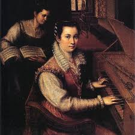
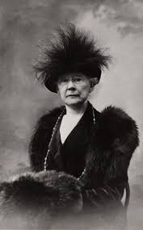
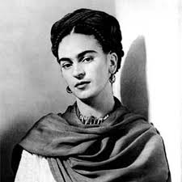
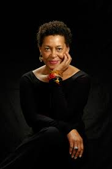

Artist Gallery
Explore the lives and works of women who shaped the art world. From the Renaissance to the present day, these artists broke barriers and told their stories through their craft.
Jump to an artist:
Lavinia Fontana
Renaissance Pioneer

Lavinia Fontana (1552–1614) was one of the first professional female artists in Western history.
She was known for her elegant portraits and religious works, and became the first woman
to paint large-scale public commissions.
Mary Cassatt
Impressionist Storyteller

Mary Cassatt (1844–1926) was an American painter who became a key figure in the
Impressionist movement in Paris.
Her work beautifully captured the intimacy of everyday life,
especially the bond between mothers and children.
Frida Kahlo
Icon of Identity

Frida Kahlo (1907–1954) is one of the most recognized artists in the world.
Her deeply personal and symbolic paintings explored themes of
identity, pain, and resilience — making her an enduring icon of strength.
Carrie Mae Weems
Contemporary Voice

Carrie Mae Weems (born 1953) is an influential contemporary artist working in
photography, film, and installation.
Her work boldly addresses race, gender, and power,
making her one of the most important voices in modern art.